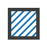
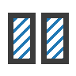
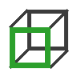
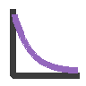
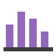

Components
Every component of the plugin, by ribbon panel. Each page lists its inputs and outputs.
Elements
Obj · Create an AcousticObject with the specified geometry, material and role.

ConMat · Create an AcousticMaterial for AcousticObject(s).

DeMat · Deconstruct an AcousticMaterial object into its components.
MatLib · Preset picker for AcousticMaterial.
Receiver · Acoustic Receiver object (microphone, human ear, etc.) with an orientation: the direction it faces, upright (+z up), which sets the frame of ambisonic responses (x facing, y left, z up).
Source · Acoustic Source object (speaker, human, etc.).
Model

Scene · Create an acoustic scene with the specified objects, sources and receivers.
Simulation
DeIRGraph · Deconstruct an impulse response graph into ImpulseResponse(s).
SimAmbi · Simulate ambisonic room impulse responses (ACN, SN3D): image sources, optional edge diffraction around obstacles and at the edges of the room’s boundary that open wider than 180 deg, and a directional feedback delay network tail.
SimBin · Simulate binaural room impulse responses, an HRTF per path and per delay line: image sources, optional edge diffraction around obstacles and at the edges of the room’s boundary that open wider than 180 deg, and a directional feedback delay network tail.
SimMono · Simulate mono room impulse responses with pyroomacoustics: the image source method (ISM), plus ray tracing (RT) by default.
Analysis

AnalyseIR · Analyse an impulse response (IR): acoustic parameters such as EDT, T20 and C50, and its time and frequency responses for Plot 2D.

DeParam · Deconstruct acoustic parameters.
Auralisation
Auralise · Auralise the room scene by convolving the impulse responses with the source signals.
Display
Plot2D · Chart an acoustic parameter (a dot per band, joined by a line), or the time or frequency response of Analyse Impulse Response (a line per channel), on the canvas: one chart per parameter connected, stacked.
Billiard · The rays of a ray field as particles at a time, like a 3D billiard: press Play to animate, or connect a time (a slider scrubs it) for a frozen frame.
EnergyMap · Colour a surface by the sound pressure level of the scene’s sources: the surface is meshed into faces no larger than spacing, one point per face centre, and each point gets the direct sound, the first-order image sources and pyroomacoustics’ rays past them, with each source’s level at 1 m (Source spl).
Rays · Trace rays from the scene’s sources, for display and for Visualise Billiard: each ray as a polyline over its wall hits, with the scattered rays when scattering is on.
Reflections · The specular (image source) reflection paths from the scene’s sources to its receivers, by order, drawn in one colour per order (order 0 black).
Util
Player · Show and play a signal from Auralise, an impulse response (e.g.
Channel · Number of channels of a sound: an audio file path, an impulse response, a Source with a sound file, or the signals of Auralise.
Worker · The compas_acoustics worker, the Python that runs every simulation and analysis: its state, its Python, its version and whether its schema matches this plugin.
Optimization
Fitness · A loss of a list of values against a target value: their mean absolute error (MAE) to the target, which measures accuracy, plus k times their sample standard deviation (STD), which measures consistency.